Ask a chat model "The capital of France is" and it says "Paris". Between your keystroke and that word, exactly one kind of thing happens: a forward pass — a single deterministic trip through the network — repeated once per generated token. No search, no lookup, no "generate" circuit. Just the same trip, over and over.
This post walks that trip in five stages, recomputing each one with raw matrix ops and checking the numbers against the real model. If the step-by-step version matches the library bit-for-bit, the mental model is right. If it doesn't, the mental model is wrong — and I'll be honest about which is which.

The whole machine in one loop — a pulse makes the full trip, one visible token per lap. Each stage below gets its own dissection.
01Tokenize — the model never sees text

All diagrams loop on a 14s cycle — real ids, real weights, real percentages from the scripts.
The model has no idea what a word is. It sees token ids: indices into a fixed vocabulary of 151,936 subword pieces, frozen before training ever started.
prompt : 'The capital of France is'
token ids : [785, 6722, 315, 9625, 374]
pieces :
785 -> 'The'
6722 -> ' capital'
315 -> ' of'
9625 -> ' France'
374 -> ' is'Common English maps almost word-per-token. Text the tokenizer saw less of during training shatters:
rare text : 'Kanchipuram idli podi'
'K' 'anch' 'ipur' 'am' ' id' 'li' ' pod' 'i'Three words became eight pieces. This is why models are worse at counting letters, why rare names cost more tokens, and why "token limits" don't map cleanly to word counts. Code: 01_tokenize.py
02Embed — one lookup, no computation

Each id selects one row from a big lookup table — 151,936 rows × 1,024 numbers. That's it. No math yet, just a copy:
embedding table : 151,936 x 1024
activations : (1, 5, 1024) dtype=bfloat16Two details that surprise people:
- Identical tokens get identical vectors. The token
' is'at position 2 and position 9 start as the exact same 1,024 numbers — the script asserts it witharray_equal. - Position isn't added here. Older transformers added a position vector at this stage. This family doesn't — position enters later, inside attention, via RoPE. At embedding time the model literally cannot tell where a token sits.
From here on, everything is vector math on a (1, 5, 1024) tensor. Code: 02_embeddings.py
03Attend — one transformer block, step by step
A block is two sub-steps, each wrapped in a pre-norm and a residual:
h = x + Attention(RMSNorm(x))
out = h + MLP(RMSNorm(h))
Attention is the only place tokens interact. Each token produces three projections — Query ("what am I looking for?"), Key ("what do I contain?"), and Value ("what I hand over" — the only thing tokens actually share). This model uses grouped-query attention: 16 query heads but only 8 key/value heads, visible right in the shapes:
q (1, 5, 2048) k (1, 5, 1024) v (1, 5, 1024) <- K/V are smaller: GQAThen RoPE rotates q and k by a position-dependent angle — the moment "token #4" becomes distinguishable from "token #1". Scores are dot products, a causal mask forbids peeking at future tokens, and softmax turns scores into weights. These are the real weights from layer 0, head 0:
The capita of France is
The 1.00 - - - -
capita 0.88 0.12 - - -
of 0.41 0.00 0.59 - -
France 0.57 0.04 0.38 0.02 -
is 0.46 0.01 0.38 0.01 0.15Each row sums to 1: a budget for how much each token copies from the ones before it. Then the MLP (SwiGLU here) processes each position independently, and residuals mean the input is never replaced — only added to.
The verification — because floating point deserves honesty, two checks:
(a) our q/k/v + library kernel vs library attention: max diff 0.0
(b) fully-manual block vs library block: max rel diff 0.234%, cosine 0.999963
mental model verified.Check (a) feeds the recomputed q/k/v — norms, RoPE, GQA and all — to the library's fused attention kernel, and matches bit for bit. Check (b) runs the from-scratch softmax path instead; a fused kernel rounds differently than step-by-step bfloat16 tensors, so ~0.2% max deviation with near-perfect cosine is exactly what correct looks like. Anyone whose from-scratch reimplementation "matched exactly" is either fusing the same way or not checking. Code: 03_inside_one_block.py
04Vote — 28 blocks and a ballot

The whole model is: embed → the same block 28 times (new weights each time) → final RMSNorm → project to vocabulary.
embeddings : (1, 5, 1024)
after layer 0: (1, 5, 1024) (shape never changes — only meaning does)
after layer 14: (1, 5, 1024)
after layer 27: (1, 5, 1024)
logits : (1, 5, 151936)The shape never changes through all 28 blocks — only the meaning packed into those 1,024 numbers does. The final projection reuses the same table from stage 2 (tied embeddings): the last token's vector is compared against all 151,936 embedding rows, one score per vocabulary entry. Recomputing the full stack step by step and comparing against model(x):
max |manual - model(x)| = 0.000000
step-by-step forward pass == library forward passAnd what the model actually "thinks" after 'The capital of France is':
27.94% ' Paris'
8.52% ' in'
5.50% '____'
4.56% ' __'
4.28% ' ____'Note what this is: a ballot, not an answer. The model doesn't output "Paris" — it outputs a probability for every one of 151,936 tokens, and something outside the model picks one. (A 0.6B model giving Paris only 28% — and hedging with fill-in-the-blank underscores, a residue of its training data — is its own little lesson in model size.) Code: 04_forward_pass_by_hand.py
05Loop — generation is just the forward pass, repeated

There is no "generate" mode inside the network. Chat is: forward pass → pick a token from the ballot → append it → forward pass → …
The one real optimization is the KV cache: after the prompt is processed once (prefill), each step feeds only the one new token, reusing the keys and values already computed. The naive alternative re-runs the entire growing sequence every step. Same Mac, same 30 tokens:
KV-cached: 176.5 tok/s
naive: 55.5 tok/s3× faster at 30 tokens — and the gap grows quadratically with sequence length, which is why nobody ships the naive version.
One honest footnote: the cache removes re-work, it never changes the math — but in bfloat16, processing a full sequence batches operations differently than processing one token at a time, and those last-bit rounding differences can flip a greedy argmax. In my run the two versions agreed for ~25 tokens, then picked different words. Determinism in floating point is more fragile than the textbook diagram admits — a thread this series will pull on later. Code: 05_generate_loop.py
What to take away
- An LLM is one deterministic function applied in a loop — tokens in, ballot out. Sampling (everything people call "creativity", "temperature", "hallucination risk") happens outside the forward pass.
- The shape
(1, L, 1024)never changes through 28 layers — depth changes meaning, not structure. Attention is the only place tokens meet. - You can verify all of this yourself, tonight, on any Apple Silicon Mac with a 350 MB model:
pip install mlx mlx-lmand five short scripts.
This is Internals #1 — a series that rebuilds AI systems from their parts and verifies every claim on real models running locally. Next up, Internals #2: What's in a Weights File? — and later in the series, the KV cache in depth, where that 3× gap at 30 tokens becomes the entire economics of inference at 30,000.